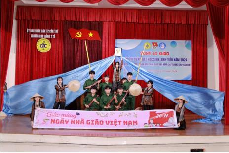
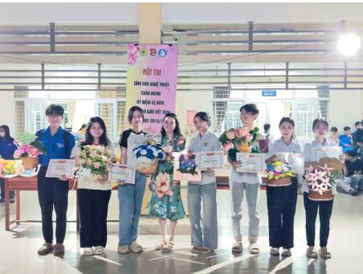
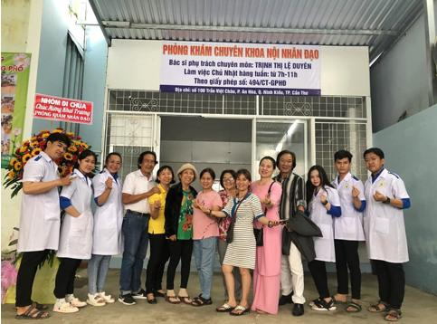
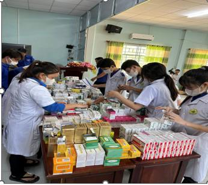
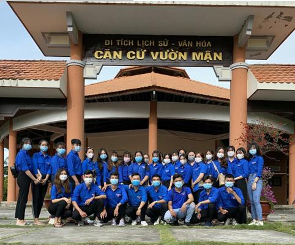
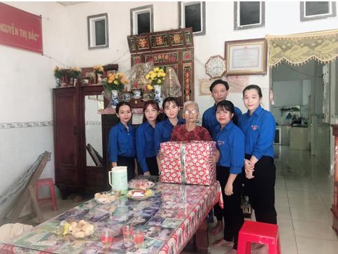

Giới thiệu Đoàn khoa Dược - Xét nghiệm
Đoàn TNCS Hồ Chí Minh khoa Dược - Xét nghiệm trường Cao đẳng Y tế Cần Thơ là tổ chức chính trị xung kích của thanh niên, sinh viên khoa Dược - Xét nghiệm. Trải qua 8 nhiệm kỳ, cùng với sự phát triển của Nhà trường, Đoàn khoa luôn hoàn thành xuất sắc nhiệm vụ được giao và không ngừng đóng góp cho sự nghiệp giáo dục - đào tạo của Nhà trường.
Trong quá trình hoạt động, Đoàn khoa luôn nhận được sự quan tâm về nhiều mặt từ BGH Nhà trường, BTV Đoàn trường, lãnh đạo Khoa cùng sự giúp sức, hỗ trợ từ các Đoàn khoa bạn trong và ngoài Trường.
Với đội ngũ cán bộ Đoàn năng động, sáng tạo, có tinh thần đoàn kết và trách nhiệm cao. Các phong trào, hoạt động ngày càng phong phú, thiết thực, thu hút sự tham gia nhiệt tình, tích cực từ phía đoàn viên, tạo điều kiện thuận lợi cho Đoàn khoa thực hiện tốt nhiệm vụ chính trị của mình.
Kế thừa và phát huy những thành quả tốt đẹp của các thế hệ cha anh, trong những năm qua, Đoàn khoa đã có nhiều đổi mới, ngày càng phát huy tích cực vai trò tiên phong, lãnh đạo trong các hoạt động đoàn thể và xã hội. Với 44 Chi đoàn trực thuộc, Đoàn khoa Dược - Xét nghiệm mang trách nhiệm đoàn kết, tập hợp, hỗ trợ và rèn luyện cho hơn 1.500 đoàn viên, thanh niên đang học tập và công tác tại Khoa; định hướng lối sống lành mạnh, tích cực và xây dựng môi trường phát triển toàn diện cho thanh niên, sinh viên; mang lại hình thái, diện mạo mới cho công tác Đoàn và phong trào sinh viên trong Trường. Với phương châm xây dựng, đẩy mạnh phong trào thanh niên học tập và rèn luyện kỹ năng, góp phần đạt mục tiêu “Tuổi trẻ Đoàn khoa Dược - Xét nghiệm năng động, sáng tạo, trau dồi tri thức, rèn luyện kỹ năng, sẵn sàng hội nhập”.
Một số hoạt động tiêu biểu do Đoàn TNCS Hồ Chí Minh khoa Dược - Xét nghiệm trường Cao đẳng Y tế Cần Thơ tổ chức:
Tổ chức và thực hiện các hoạt động văn hóa, văn nghệ: Vào dịp kỷ niệm các ngày lễ lớn trong năm như: 20/10, 20/11, 8/3, 26/3... được sự cho phép của Đoàn Trường, Chi ủy - Chi bộ Dược - Xét nghiệm, Đoàn khoa tổ chức các chương trình, hội thi cắm hoa nghệ thuật, văn nghệ, trồng cây xanh... nhằm tạo ra sân chơi lành mạnh, bổ ích, giúp các bạn sinh viên có cơ hội được thể hiện tài năng, bản lĩnh, trí tuệ của mình, đồng thời nâng cao tinh thần học hỏi, đoàn kết giữa toàn thể thanh niên sinh viên trong Trường.

Hội thi văn nghệ chào mừng ngày
Nhà giáo Việt Nam

Hội thi cắm hoa nghệ thuật
Tổ chức các hoạt động tình nguyện vì cộng đồng: Trong những năm vừa qua, Đoàn Thanh Niên khoa Dược - Xét nghiệm đã tổ chức nhiều các hoạt động tình nguyện vì cộng đồng, bao gồm tình nguyện tại chỗ và tổ chức các đoàn tình nguyện khám bệnh - phát thuốc miễn phí cho các đối tượng chính sách, đồng bào khó khăn, phát cơm cho người có hoàn cảnh khó khăn trên các tuyến đường nội ô TP Cần Thơ... Đây là những hoạt động vô cùng ý nghĩa, thiết thực thể hiện vai trò xung kích tình nguyện vì cộng đồng của thế hệ trẻ, các hoạt động còn lan tỏa tinh thần tương thân tương ái trong đoàn viên thanh niên đến những mảnh đời còn khó khăn, chật vật mưu sinh trong cuộc sống.

Cấp phát thuốc tại phòng khám nội nhân đạo

Cấp phát thuốc miễn phí cho người dân và trẻ em tại UBND xã Tân Thới
Hành trình tìm về địa chỉ đỏ: Đoàn TNCS Hồ Chí Minh Khoa Dược - Xét nghiệm luôn chú trọng các hoạt động tìm về địa chỉ đỏ. Qua đó, giáo dục truyền thống lịch sử cho thế hệ trẻ, thể hiện sự tri ân sâu sắc đối với các thế hệ đi trước đã cống hiến, hy sinh cho sự nghiệp giải phóng dân tộc.

Thăm di tích lịch sử Căn cứ Vườn Mận

Thăm và tặng quà cho các mẹ Việt Nam Anh Hùng trên địa bàn TP Cần Thơ
Các thành tích đã được ghi nhận:
- Bằng khen của Trung ương Đoàn TNCS Hồ Chí Minh năm 2024.
- Bằng khen của Thành Đoàn Cần Thơ năm 2023, 2024.
- Bằng khen của Đoàn Trường Cao đẳng Y tế Cần Thơ nhiều năm liền
Trong suốt quá trình hình thành và phát triển, Đoàn Thanh Niên Khoa Dược - Xét nghiệm Trường Cao đẳng Y tế Cần Thơ đã dần trưởng thành và lớn mạnh cả về số lượng và chất lượng. Hiện nay BCH Đoàn Khoa gồm 15 đồng chí có đủ đức, đủ tài; luôn hoàn thành xuất sắc nhiệm vụ được giao, có nhiều đóng góp cho sự phát triển chung của Khoa và Trường.
Mọi thông tin xin liên hệ:
Email: doankhoadxn.dkdxn.cmc@gmail.com
Facebook:https://www.facebook.com/doanthanhnien.kdxncmc